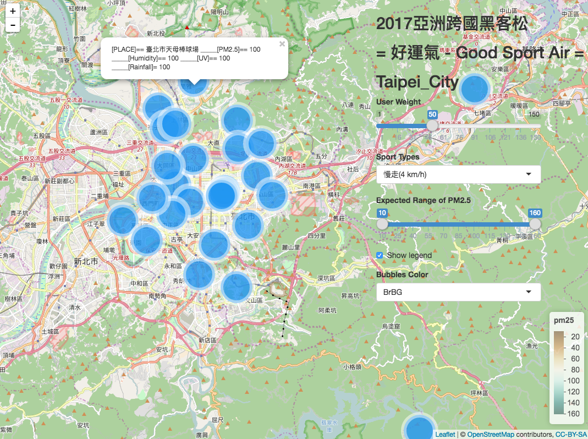

Bad air quality become the excuse for not doing exercise?
We want to provide you the information of air quality in your city.
Give you an advice about where is the best exercising place.
Intro
TEAM INTRO:
Our team is from Soochow University Big Data Department. The names of the members in the photo are listed below in sequence from the left side to the right: Angus Huang, Jenny Yang, Lily Li, Sophie Liu, Liz LI.
WEBSITE INTRO:
Recently, more and more people go to exercise for their health and body shape. However, the unknown of air quality become a reason for them to refuse to go out and exercise.
Therefore, by the yearly information of air quality and the normal please that people go exercise. We will analyze what kind of exercise is proper enough to fix the air quality there.So that we will not do harm to our body instead because of the bad air quality.
The users can choose where they want to go and also what kind of exercise they can do by default air quality/humidity/rainfall/UVI/PM2.5. Enjoying the exercise they like in a best environment.
Search
Step 1 : Choose your weight, sport types, excepted range of PM2.5, expected district by this map.
Step 2 : You can gain the suitable site to exercise!
Step 3 : Wear your sneakers and go out to work!

Knowledge
Pm2.5's impact on human health
1. When you think of air pollution, asthma, allergies, lung cancer might of have flashed through your mine, but cardiovascular diseases are actually the most prevalent problem related to air pollution. Pm2.5 particles can pass through alveolus and circulate the toxins throughout the body, irritating vessel walls, and can cause blood clot if severe.
2. Studies around the world show highest levels of PM2.5 in people who use bicycles and motorcycles. Bicycle users are especially at risk because of their higher cardiac output due to exercising. Therefore, it is best to cycle in rural areas
3. Indoors ,smoking ,burning incense and dust are the major cause of the increased concentration of Pm2.5 particles.
Knowledge
Ultraviolet types
Long wavelength ultraviolet rays (UVA) and medium wavelength Uv light rays (UVB). Ultraviolet effect
UVA's effect on human health
Reaching the dermis layer of skin, causing skin aging, UV light is the main cause of spots on skin. Frequent exposure to UV light causes skin loosening, creating wrinkles and vessels appearing. This, on the long run, creates many irreversible damage to the human body.
UVB's effects on human health
UVB makes the horny tissues of the skin thicken, darken, redden. Sometimes it d makes the eyes dry and hurtful.
Knowledge
The website connect Weather forecast information and suggest some playgrounds to user.
Knowledge
Humidity effects on human health
High temperature and humidity is the perfect environment for bacteria and allergens to grow on. When these allergens spread, it'll cause allergies, asthma, athletes foot, Atopic dermatitis, etc. Furthermore, it'll cause some materials to release the chemical toxins within them, polluting indoor air quality.